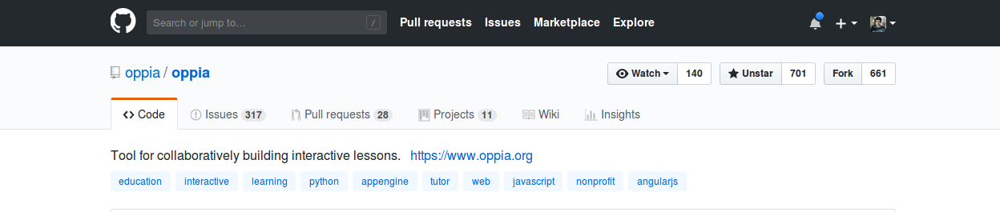
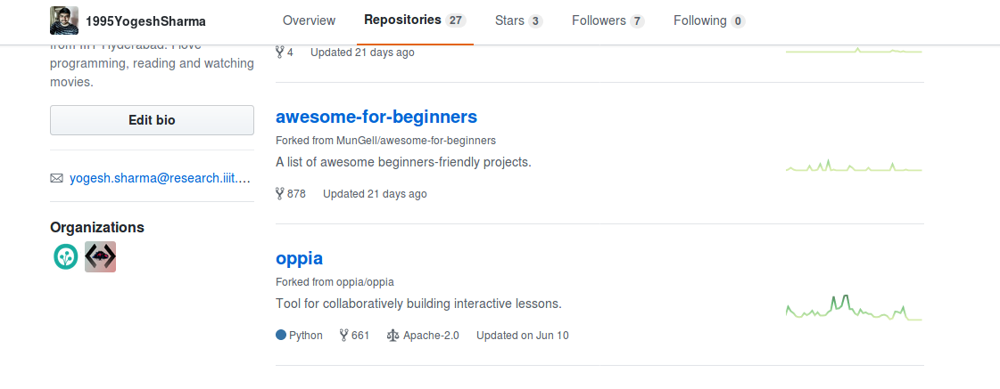

Installing Oppia (mac os)
Table of Contents
Note: If you just want to create and share explorations, you may be able to use the hosted server at https://www.oppia.org (in which case you don’t need to install anything).
These installation instructions were last tested on 15 Aug 2021. For more information on issues that may occasionally arise with the installation process, please see the Troubleshooting page. Thanks to Varun Tandon for updating these instructions!
These instructions are for Python 2, but Oppia now uses Python 3. Unless you need to work with the old Python 2 code, you should follow the Python 3 instructions instead.
Note: Be careful about trying to install Oppia if you have the Python Anaconda platform installed. We’ve received a bunch of reports that installation is tricky in that environment (there are lots of small things that get in the way), and that the solution is to use the standard python installation (via e.g. homebrew) instead.
Note: Mac with M1 chips
To check whether your Mac has an M1 chip, navigate to the Apple menu and select “About This Mac.” In the window that opens, check for a “Chip” section. If it says “Apple M1” then you have an M1 chip. Otherwise, you should see an Intel processor listed in the “Processor” section. This article explains in more detail with screenshots if you have trouble.
Install Rosetta 2
Inside Rosetta perform the Downloading and prerequisites steps (Note: If
sudo easy_install pyyamldoes not work try usingpip3 install pyyaml).Open the Rosetta terminal and run
python -m scripts.start
Clone Oppia
Create a new, empty folder that will hold your Oppia work. Here, we call the folder
opensource.Navigate to the folder (
cd opensource/).Navigate to https://github.com/oppia/oppia and click on the
forkbutton. It is placed on the right corner opposite the repository nameoppia/oppia.
You should now see Oppia under your repositories. It will be marked as forked from
oppia/oppia.
For more information on forking, see GitHub’s documentation.
Clone the repository to your local computer (replacing the values in
{{}}):$ git clone https://github.com/{{GITHUB USERNAME}}/oppia.git Cloning into 'oppia'... remote: Enumerating objects: 203313, done. remote: Total 203313 (delta 0), reused 0 (delta 0), pack-reused 203313 Receiving objects: 100% (203313/203313), 179.26 MiB | 3.12 MiB/s, done. Resolving deltas: 100% (155851/155851), done. Updating files: 100% (4199/4199), done.
Note that you will see slightly different output because the numbers change as Oppia grows.
Now your
originremote is pointing to your fork ({{GITHUB USERNAME}}/oppia). To stay up to date with the mainoppia/oppiarepository, add it as a remote calledupstream. You’ll first need to move into theoppiadirectory that was created by the clone operation.$ cd oppia $ git remote add upstream https://github.com/oppia/oppia.git $ git remote -v origin https://github.com/{{GITHUB USERNAME}}/oppia.git (fetch) origin https://github.com/{{GITHUB USERNAME}}/oppia.git (push) upstream https://github.com/oppia/oppia.git (fetch) upstream https://github.com/oppia/oppia.git (push)
The
git remote -vcommand at the end shows all your current remotes.Now you can pull in changes from
oppia/oppiaby runninggit pull upstream {{branch}}and push your changes to your fork by runninggit push origin {{branch}}.We have established a clean setup now. We can make any changes we like and push it to this forked repository, and then make a pull request for getting the changes merged into the original repository. Here’s a nice picture explaining the process (image source).

For making any changes to original repository, we first sync our cloned repository with original repository. We merge develop with
upstream/developto do this. Now we make a new branch, do the changes on the branch, push the branch to forked repository, and make a PR from Github interface. We use a different branch to make changes so that we can work on multiple issues while still having a clean version in develop branch.
Install prerequisites
Oppia relies on a number of programs and third-party libraries. Many of these libraries are downloaded automatically for you when you first run the start.py script provided with Oppia. However, there are some things that you will need to do beforehand:
Ensure that you have Python 2.7 installed (Note: you can check this by running
python --version). If Python 2.7 is not installed, download and run the latest Python 2.7 installer from https://www.python.org/downloads/mac-osx/. Make sure you download an installer for Python 2 and not Python 3!Check if you have git installed:
$ git --version git version 2.24.3 (Apple Git-128)
If you get a
command not founderror, then you need to install git. Download git, then run the package and follow instructions. This allows you to store the source in version control.
Setup a virtual environment
A virtual environment ensures that conflicting versions of Python, pip, or any Python modules on your machine do not result in installation issues.
In the
opensource/folder (note: this is the parent directory of oppia/) run:pip2 install virtualenv python2 -m virtualenv env
This creates a Python 2 virtual environment named “env” in your
opensource/directory.Now, anytime you need to work with the Oppia code base, you should activate the virtualenv in
opensource/by runningsource env/bin/activate
If this is successful, the usual
YOURMACBOOK-NAME:directory$at the start of the terminal line will be replaced with(env) YOURMACBOOK-NAME:directory$The following steps of installation and running the development server should all be done within this virtual environment to ensure compatibility.
After activating the virtual environment, install setuptools (which is needed to install coverage, which checks test coverage for the Python code) and pyyaml (which is needed to parse YAML files).
$ pip install pyyaml setuptools Requirement already satisfied: setuptools in /home/user/.pyenv/versions/3.7.18/envs/oppia-tmp/lib/python2.7/site-packages (44.1.1) Collecting pyyaml Downloading PyYAML-5.4.1-cp27-cp27mu-manylinux1_x86_64.whl (574 kB) |████████████████████████████████| 574 kB 2.3 MB/s Installing collected packages: pyyaml Successfully installed pyyaml-5.4.1
If you want to run backend tests and check coverage, please install these 2 pip libraries globally (or in your venv).
pip install coverage configparser
Troubleshooting: If, after running the pip2 install virtualenv command, you encounter a ‘pip2 not found error’, then do the following (reference):
Run the following command in the terminal:
curl https://bootstrap.pypa.io/get-pip.py -o get-pip.py. This command downloads the get-pip.py file.In the same folder where you ran the above command, run:
python get-pip.py.If, after running the above command you get a warning about the directory not being added to PATH, you can add the suggested directory to the PATH by running:
sudo nano /etc/pathsand adding the suggested path at the bottom of the /etc/paths file (e.g. /Users/{{SYSTEM USERNAME}}/Library/Python/2.7/bin).
Note: If you get errors while setting up virtual environment and running a development server works fine without a virtual environment (there are no conflicts with versions of python, pip or other python modules), you can safely skip the virtual environment setup. Also, if you use another tool to manage your Python environments like pipenv or pyenv, those should work too.
Running Oppia on a development server
In a terminal, navigate to
oppia/and run:python -m scripts.startThe first time you run this script, it will take a while (about 5 - 10 minutes when we last tested it in Dec 2018, though this depends on your Internet connection). Subsequent runs should be much faster. The
start.pyscript downloads and installs the required dependencies (such as Google App Engine) if they are not already present, and sets up a development server for you to play with. The development server logs are then output to this terminal, so you will not be able to enter further commands in it until you disconnect the server.Note: Please don’t use
sudowhile installing. It’s not required, and using it may cause problems later. If you face permissions issues, ensure that you have the necessary permissions for the directory in which you’re trying to set up Oppia. If you run into any other installation problems, please read these notesNote: The script will create a number of files and folders that are siblings of the
oppia/root directory (e.g.oppia_tools). This is done so that these two folders will not be uploaded to App Engine when the application is deployed to the web.Note: If you run into errors while installing Oppia, please try running
python -m scripts.cleanand then runningstart.pyagain.Note: Oppia uses the npm tool to install some packages. This tool accesses both ~/tmp and ~/.npm, and has been known to occasionally encounter permissions issues with those directories. You may need to either delete these directories and all their contents (if they do not contain anything else that needs to be preserved), or change their permissions so that they are owned by you, which you can do by running
sudo chown -R {{YOUR_USERNAME}} ~/tmp sudo chown -R {{YOUR_USERNAME}} ~/.npm
where
{{YOUR_USERNAME}}should be replaced by your username.The
start.pyscript will start a development server at http://localhost:8181. (If this doesn’t happen automatically, try navigating directly to http://localhost:8181 in a browser once stuff stops being printed to the terminal.) It should look something like this:
You can also view the App Engine admin console at http://localhost:8000.
Note: There may be a few warnings that appear after running
start.py. Don’t worry about these so long as you see the page once you go to http://localhost:8181. The script should continue to run so long as the development server is on (you’ll see a lot of lines that start with “INFO”) and you’re able to navigate to the page.When you’re done, you can shut down the development server by typing Ctrl+C into the terminal. Then wait for a command prompt to appear. Oppia has to shut down all the services it’s started, and if you abort the graceful shutdown steps (e.g. by typing Ctrl+C many times), you may have trouble re-starting the server.
Example of shutdown output
^CINFO 2021-07-17 21:50:08,043 shutdown.py:50] Shutting down. INFO 2021-07-17 21:50:08,043 stub_util.py:377] Applying all pending transactions and saving the datastore INFO 2021-07-17 21:50:08,044 stub_util.py:380] Saving search indexes i emulators: Received SIGINT (Ctrl-C) for the first time. Starting a clean shutdown. i emulators: Please wait for a clean shutdown or send the SIGINT (Ctrl-C) signal again to stop right now. i Automatically exporting data using --export-on-exit "/opensource/oppia/../firebase_emulator_cache" please wait for the export to finish... Servers are shutting down, please wait for them to end gracefully! i Found running emulator hub for project dev-project-id at http://localhost:4400 i Creating export directory /opensource/firebase_emulator_cache i Exporting data to: /opensource/firebase_emulator_cache i emulators: Received export request. Exporting data to /opensource/firebase_emulator_cache. ✔ emulators: Export complete. ✔ Export complete i emulators: Shutting down emulators. i ui: Stopping Emulator UI ⚠ Emulator UI has exited upon receiving signal: SIGINT i auth: Stopping Authentication Emulator i hub: Stopping emulator hub i logging: Stopping Logging Emulator Stopping Web Browser(name="open", pid=29306)... Stopping GAE Development Server(name="python2.7", pid=29289)... Stopping Webpack Compiler(name="node", pid=29234)... Stopping Firebase Emulator(name="node", pid=29216)... Stopping ElasticSearch Server(name="java", pid=29148)... Stopping Redis Server(name="redis-server", pid=29147)... Done! Thank you for waiting. Traceback (most recent call last): File "/Users/user/.pyenv/versions/2.7.16/lib/python2.7/runpy.py", line 174, in _run_module_as_main "__main__", fname, loader, pkg_name) File "/Users/user/.pyenv/versions/2.7.16/lib/python2.7/runpy.py", line 72, in _run_code exec code in run_globals File "/opensource/oppia/scripts/start.py", line 205, in <module> main() File "/opensource/oppia/scripts/start.py", line 201, in main dev_appserver.wait() File "/opensource/oppia/../oppia_tools/psutil-5.7.3/psutil/__init__.py", line 1350, in wait ret = super(Popen, self).wait(timeout) File "/opensource/oppia/../oppia_tools/psutil-5.7.3/psutil/__init__.py", line 1259, in wait self._exitcode = self._proc.wait(timeout) File "/opensource/oppia/../oppia_tools/psutil-5.7.3/psutil/_psosx.py", line 342, in wrapper return fun(self, *args, **kwargs) File "/opensource/oppia/../oppia_tools/psutil-5.7.3/psutil/_psosx.py", line 550, in wait return _psposix.wait_pid(self.pid, timeout, self._name) File "/opensource/oppia/../oppia_tools/psutil-5.7.3/psutil/_psposix.py", line 115, in wait_pid retpid, status = os.waitpid(pid, flags) KeyboardInterrupt
Tips and tricks
To preserve the contents of the local datastore between consecutive runs, use the
--save_datastoreargument when starting up the dev server:python -m scripts.start --save_datastoreThe default Oppia installation comes with a set of demo explorations. On startup, none of these are loaded. To load them, log in to your server as an admin, then click your username in the top-right corner and choose ‘Admin Page’. This will open the admin page, from which you can load the demo explorations.